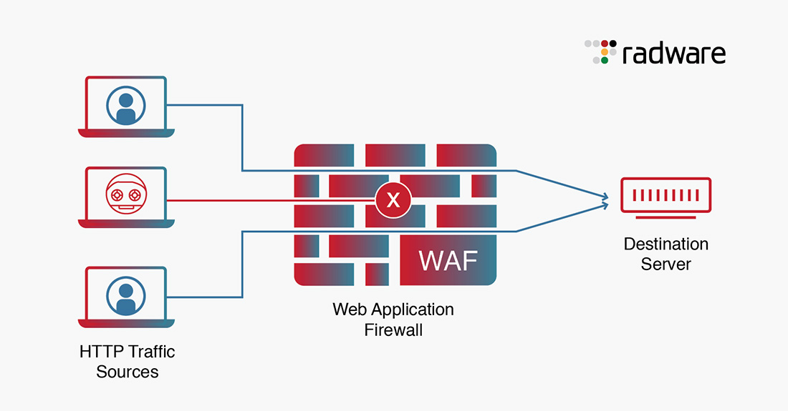

Inspección Profunda
A diferencia de los firewalls de red tradicionales, analiza solicitudes HTTP específicas para detectar comportamientos anómalos o inyecciones de código.
Saber másCIBERSEGURIDAD AVANZADA · CAPA DE APLICACIÓN
Descubre cómo un Web Application Firewall (WAF) filtra, monitorea y bloquea el tráfico HTTP/HTTPS malicioso antes de que comprometa los servidores o bases de datos.

PILARES DE PROTECCIÓN
A diferencia de los firewalls de red tradicionales, analiza solicitudes HTTP específicas para detectar comportamientos anómalos o inyecciones de código.
Saber másPreviene ataques críticos como Inyecciones SQL (SQLi), Cross-Site Scripting (XSS) y falsificación de peticiones en sitios cruzados (CSRF).
Ver vulnerabilidadesProtege la infraestructura frente a intentos de denegación de servicio a nivel de aplicación, asegurando la operatividad del sitio web.
Consultar imagenes